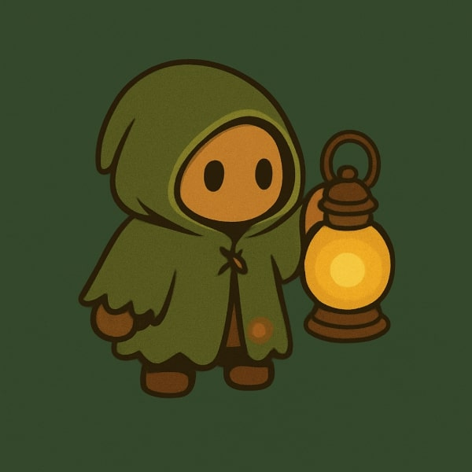

<!DOCTYPE html>
<html lang="en">
<head>
    <meta charset="UTF-8">
    <meta name="viewport" content="width=device-width, initial-scale=1.0">
    <title>LØFI Artist Profile</title>
    <!-- Tailwind CSS -->
    <script src="https://cdn.tailwindcss.com"></script>
    <link href="https://fonts.googleapis.com/css2?family=Inter:wght@100..900&display=swap" rel="stylesheet">
    <style>
        body { font-family: 'Inter', sans-serif; }
        @keyframes pulse-slow {
            0%, 100% { opacity: 0.3; transform: scale(1); }
            50% { opacity: 0.4; transform: scale(1.1); }
        }
        .animate-pulse-slow { animation: pulse-slow 8s ease-in-out infinite; }
        .overflow-y-auto-hidden::-webkit-scrollbar { display: none; }
        .overflow-y-auto-hidden { -ms-overflow-style: none; scrollbar-width: none; }
    </style>
</head>
<body class="bg-[#0d1410] text-[#e0e0e0] overflow-y-auto-hidden min-h-screen">

    <div id="root"></div>

    <script>
        // --- CONFIGURATION ---
        const ARTIST_ID = '1nZ7dtTkCiDnQidTP2agxm';
        const CLIENT_ID = 'ab654754464a431c841c768e37af071a'; 
        const CLIENT_SECRET = '65afef856d3d44278f46be69cbaa0730'; 
        
        const FALLBACK_DATA = {
            name: "Farland",
            image: "https://i.scdn.co/image/ab67616d0000b273a9b8b9b8b9b8b9b8b9b8b9b8",
            type: "Single",
            url: "https://open.spotify.com/artist/1nZ7dtTkCiDnQidTP2agxm"
        };

        // --- ICONS ---

        // 1. Social Spotify Icon (FIXED: Geometric Arcs for Clean Outline)
        // Uses smooth quadratic curves to match the wireframe style of IG/YT
        const iconSpotifySocial = `<svg xmlns="http://www.w3.org/2000/svg" width="20" height="20" viewBox="0 0 24 24" fill="none" stroke="currentColor" stroke-width="2" stroke-linecap="round" stroke-linejoin="round"><circle cx="12" cy="12" r="10"/><path d="M8 13c2-1 6-1 8 0"/><path d="M7 10c3-1.5 7-1.5 10 0"/><path d="M9 16c1.5-0.5 3.5-0.5 5 0"/></svg>`;

        // 2. Button Spotify Icon (FIXED: Official SimpleIcons Path)
        // This is the exact pixel-perfect path used by Spotify officially
        const iconSpotifyFilled = `<svg xmlns="http://www.w3.org/2000/svg" width="20" height="20" viewBox="0 0 24 24" fill="currentColor" class="text-white"><path d="M12 0C5.4 0 0 5.4 0 12s5.4 12 12 12 12-5.4 12-12S18.66 0 12 0zm5.521 17.34c-.24.359-.66.48-1.021.24-2.82-1.74-6.36-2.101-10.561-1.141-.418.122-.779-.179-.899-.539-.12-.421.18-.78.54-.9 4.56-1.021 8.52-.6 11.64 1.32.42.18.479.659.301 1.02zm1.44-3.3c-.301.42-.841.6-1.262.3-3.239-1.98-8.159-2.58-11.939-1.38-.479.12-1.02-.12-1.14-.6-.12-.48.12-1.021.6-1.141C9.6 9.9 15 10.561 18.72 12.84c.361.181.54.78.241 1.2zm.12-3.36C15.24 8.4 8.82 8.16 5.16 9.301c-.6.179-1.2-.181-1.38-.721-.18-.601.18-1.2.72-1.381 4.26-1.26 11.4-1.02 15.96 1.74.539.3.66.96.359 1.5-.3.54-.96.66-1.5.36z"/></svg>`;

        // 3. Gemini Blue Star Icon
        const iconSparkles = `<svg xmlns="http://www.w3.org/2000/svg" width="20" height="20" viewBox="0 0 24 24" fill="currentColor" class="text-[#4e85eb]"><path d="M12 2L14.5 9.5L22 12L14.5 14.5L12 22L9.5 14.5L2 12L9.5 9.5L12 2Z"/></svg>`;

        // Other Icons
        const iconClock = `<svg xmlns="http://www.w3.org/2000/svg" width="14" height="14" viewBox="0 0 24 24" fill="none" stroke="currentColor" stroke-width="2" stroke-linecap="round" stroke-linejoin="round" class="text-[#d4a056]"><circle cx="12" cy="12" r="10"/><polyline points="12 6 12 12 16 14"/></svg>`;
        const iconInstagram = `<svg xmlns="http://www.w3.org/2000/svg" width="20" height="20" viewBox="0 0 24 24" fill="none" stroke="currentColor" stroke-width="2" stroke-linecap="round" stroke-linejoin="round"><rect width="20" height="20" x="2" y="2" rx="5" ry="5"/><path d="M16 11.37A4 4 0 1 1 12.63 8 4 4 0 0 1 16 11.37z"/><line x1="17.5" x2="17.5" y1="6.5" y2="6.5"/></svg>`;
        const iconYoutube = `<svg xmlns="http://www.w3.org/2000/svg" width="20" height="20" viewBox="0 0 24 24" fill="none" stroke="currentColor" stroke-width="2" stroke-linecap="round" stroke-linejoin="round"><path d="M2.5 17a24.12 24.12 0 0 1 0-10 2 2 0 0 1 1.7-1.7A24.34 24.34 0 0 1 12 4c.3 0 .7 0 1 0a24.34 24.34 0 0 1 7.8 1.3 2 2 0 0 1 1.7 1.7 24.12 24.12 0 0 1 0 10 2 2 0 0 1-1.7 1.7A24.34 24.34 0 0 1 12 20c-.3 0-.7 0-1 0a24.34 24.34 0 0 1-7.8-1.3 2 2 0 0 1-1.7-1.7z"/><polygon points="10 15 15 12 10 9 10 15"/></svg>`;
        const iconExternalLink = `<svg xmlns="http://www.w3.org/2000/svg" width="16" height="16" viewBox="0 0 24 24" fill="none" stroke="currentColor" stroke-width="2" stroke-linecap="round" stroke-linejoin="round"><path d="M18 13v6a2 2 0 0 1-2 2H5a2 2 0 0 1-2-2V8a2 2 0 0 1 2-2h6"/><polyline points="15 3 21 3 21 9"/><line x1="10" x2="21" y1="14" y2="3"/></svg>`;
        const iconPlay = `<svg xmlns="http://www.w3.org/2000/svg" width="20" height="20" viewBox="0 0 24 24" fill="white" stroke="white" stroke-width="2" stroke-linecap="round" stroke-linejoin="round"><polygon points="5 3 19 12 5 21 5 3"/></svg>`;

        // Helper Functions
        const formatTime = (date) => date.toLocaleTimeString([], { hour: '2-digit', minute: '2-digit' });

        const createSocialLink = (href, iconHtml) => `
            <a href="${href}" target="_blank" rel="noreferrer" class="w-10 h-10 flex items-center justify-center rounded-full bg-white/5 border border-white/10 text-gray-400 hover:text-white hover:bg-white/10 hover:scale-110 transition-all duration-300">
                ${iconHtml}
            </a>
        `;

        const fetchWithRetry = async (url, options, retries = 3) => {
            let lastError = null;
            for (let i = 0; i < retries; i++) {
                try {
                    const response = await fetch(url, options);
                    if (response.ok) return response;
                    lastError = new Error(`HTTP error! status: ${response.status}`);
                } catch (error) { lastError = error; }
                if (i < retries - 1) await new Promise(resolve => setTimeout(resolve, Math.pow(2, i) * 1000));
            }
            throw lastError;
        };

        // --- MAIN RENDER ---
        const renderApp = (latestRelease, loading, time) => {
            const formattedTime = formatTime(time);
            const content = `
                <div class="min-h-screen bg-[#0d1410] text-[#e0e0e0] font-sans overflow-x-hidden selection:bg-[#d4a056] selection:text-[#0d1410]">
                    <!-- BACKGROUND -->
                    <div class="fixed inset-0 pointer-events-none z-0">
                        <div class="absolute top-[-20%] left-[-20%] w-[80vw] h-[80vw] bg-[#1f3a2b] rounded-full blur-[120px] opacity-40 animate-pulse-slow"></div>
                        <div class="absolute bottom-[-20%] right-[-20%] w-[60vw] h-[60vw] bg-[#3d2b1f] rounded-full blur-[100px] opacity-30"></div>
                        <div class="absolute inset-0 opacity-[0.03]" style="background-image: url('data:image/svg+xml,%3Csvg viewBox=\'0 0 200 200\' xmlns=\'http://www.w3.org/2000/svg\'%3E%3Cfilter id=\'noiseFilter\'%3E%3CfeTurbulence type=\'fractalNoise\' baseFrequency=\'0.65\' numOctaves=\'3\' stitchTiles=\'stitch\'/%3E%3C/filter%3E%3Crect width=\'100%25\' height=\'100%25\' filter=\'url(%23noiseFilter)\'/%3E%3C/svg%3E')"></div>
                    </div>

                    <!-- NAVBAR -->
                    <nav class="relative z-50 flex justify-between items-center px-6 py-6 md:px-12 max-w-7xl mx-auto">
                        <div class="text-2xl font-bold tracking-widest text-white flex items-center gap-2">
                            <span class="w-3 h-3 bg-[#d4a056] rounded-full shadow-[0_0_10px_#d4a056]"></span>
                            LØFI
                        </div>
                        <div class="flex items-center gap-4 md:gap-8">
                            <div class="hidden md:flex items-center gap-2 px-4 py-2 bg-white/5 backdrop-blur-sm rounded-full border border-white/10 text-sm text-gray-300">
                                ${iconClock}
                                <span>${formattedTime}</span>
                                <span class="text-xs opacity-50">LOC</span>
                            </div>
                            <!-- Social Links -->
                            <div class="flex items-center gap-4">
                                ${createSocialLink("https://www.instagram.com/guardian_waves?utm_source=qr&igsh=MWdkdzZrNW92am9pZQ==", iconInstagram)}
                                ${createSocialLink("https://youtube.com/@guardian_waves?si=gcZoTRacsQEaouKK", iconYoutube)}
                                ${createSocialLink("https://open.spotify.com/artist/1nZ7dtTkCiDnQidTP2agxm?si=QzmQmUn6TgSioKADwvnbfw", iconSpotifySocial)}
                            </div>
                        </div>
                    </nav>

                    <!-- HERO -->
                    <main class="relative z-10 container mx-auto px-6 md:px-12 pt-8 pb-20 max-w-6xl grid md:grid-cols-2 gap-12 items-center">
                        <!-- LEFT -->
                        <div class="order-2 md:order-1 space-y-8">
                            <div>
                                <div class="inline-block px-3 py-1 mb-4 text-xs font-medium tracking-wider text-[#d4a056] bg-[#d4a056]/10 rounded-full border border-[#d4a056]/20">
                                    BEATS TO STUDY TO
                                </div>
                                <h1 class="text-5xl md:text-7xl font-bold text-white leading-tight mb-2">
                                    Sanctuary <br />
                                    <span class="text-transparent bg-clip-text bg-gradient-to-r from-[#d4a056] to-[#a3d456]">Of Sound.</span>
                                </h1>
                            </div>

                            <div class="bg-white/5 backdrop-blur-md p-6 md:p-8 rounded-2xl border border-white/10 leading-relaxed text-gray-300 shadow-xl">
                                <p class="mb-4">Follow the <span class="text-[#a3d456] font-medium">Lantern Guardian</span> into a sanctuary of sound. We specialize in non-distracting study beats, blending mellow hip hop rhythms with the nostalgic warmth of vinyl crackle.</p>
                                <p class="mb-4">Every track is curated to elevate concentration, reduce stress, and guide your late-night work sessions. Let the teal light of the Lantern Guardian be your guide to flow state.</p>
                                <!-- Bio Link: Updated Star Icon -->
                                <div class="flex items-center gap-2 text-white font-medium mt-6">
                                    ${iconSparkles}
                                    <span>Follow LØFI to unlock your next focus session.</span>
                                </div>
                            </div>

                            <!-- CTA Button -->
                            <div class="flex flex-wrap gap-4">
                                <a href="https://open.spotify.com/artist/1nZ7dtTkCiDnQidTP2agxm?si=QzmQmUn6TgSioKADwvnbfw" target="_blank" rel="noreferrer"
                                    class="group relative px-8 py-4 bg-[#1DB954] text-white font-bold rounded-full overflow-hidden transition-transform active:scale-95 hover:shadow-[0_0_30px_rgba(29,185,84,0.4)]">
                                    <div class="absolute inset-0 bg-white/20 translate-y-full group-hover:translate-y-0 transition-transform duration-300"></div>
                                    <span class="relative flex items-center gap-2">
                                        ${iconSpotifyFilled}
                                        Listen on Spotify
                                    </span>
                                </a>
                            </div>
                        </div>

                        <!-- RIGHT -->
                        <div class="order-1 md:order-2 relative flex flex-col items-center">
                            <div class="relative w-full max-w-md aspect-square mx-auto">
                                <div class="absolute inset-0 bg-[#d4a056] rounded-full blur-[80px] opacity-20 animate-pulse"></div>
                                <div class="relative z-10 w-full h-full flex items-center justify-center transition-transform duration-700 hover:scale-105">
                                    
                                </div>
                                <div class="absolute -bottom-12 md:-left-12 left-4 right-4 md:right-auto z-20">
                                    <div id="release-card" class="bg-[#121212] border border-[#282828] p-4 rounded-xl shadow-[0_10px_40px_-10px_rgba(0,0,0,0.8)] flex items-center gap-4 max-w-xs backdrop-blur-md transform transition-all duration-300 hover:-translate-y-2 cursor-pointer"
                                        onclick="window.open(this.dataset.url, '_blank')" data-url="${latestRelease ? latestRelease.url : ''}">
                                        ${loading ? `<div class="w-16 h-16 bg-gray-800 rounded animate-pulse"></div>` : `
                                            <div class="relative w-16 h-16 rounded overflow-hidden flex-shrink-0 group-card">
                                                ${latestRelease?.image ? `` : `
                                                    <div class="w-full h-full bg-gradient-to-br from-green-800 to-black flex items-center justify-center">${iconSpotifyFilled}</div>
                                                `}
                                                <div class="absolute inset-0 bg-black/40 flex items-center justify-center opacity-0 hover:opacity-100 transition-opacity">${iconPlay}</div>
                                            </div>
                                        `}
                                        <div class="flex-1 min-w-0">
                                            <p class="text-[10px] uppercase tracking-widest text-[#1DB954] font-bold mb-1">${loading ? "Loading..." : "Latest Release"}</p>
                                            <h3 class="text-white font-medium truncate text-lg leading-none mb-1">${latestRelease?.name || "Unknown"}</h3>
                                            <p class="text-gray-500 text-xs truncate">LØFI</p>
                                        </div>
                                        ${iconExternalLink}
                                    </div>
                                </div>
                            </div>
                        </div>
                    </main>

                    <div class="w-full h-px bg-gradient-to-r from-transparent via-white/10 to-transparent my-12"></div>
                    <footer class="text-center text-gray-500 text-sm pb-10 px-6">
                        <p>© ${new Date().getFullYear()} Guardian Waves / LØFI. All rights reserved.</p>
                        <p class="mt-2 text-xs opacity-50">Designed with the Lantern Guardian.</p>
                    </footer>
                </div>
            `;
            document.getElementById('root').innerHTML = content;
        };

        let latestReleaseState = null;
        let loadingState = true;
        let timeState = new Date();
        renderApp(latestReleaseState, loadingState, timeState);
        setInterval(() => {
            timeState = new Date();
            renderApp(latestReleaseState, loadingState, timeState);
        }, 1000);

        const fetchLatestRelease = async () => {
            try {
                const authString = btoa(`${CLIENT_ID}:${CLIENT_SECRET}`);
                const tokenResponse = await fetchWithRetry('https://accounts.spotify.com/api/token', {
                    method: 'POST',
                    headers: { 'Content-Type': 'application/x-www-form-urlencoded', 'Authorization': `Basic ${authString}` },
                    body: 'grant_type=client_credentials'
                });
                const tokenData = await tokenResponse.json();
                const albumsResponse = await fetchWithRetry(`https://api.spotify.com/v1/artists/${ARTIST_ID}/albums?include_groups=album,single&limit=1&market=US`, {
                    headers: { 'Authorization': `Bearer ${tokenData.access_token}` }
                });
                const albumsData = await albumsResponse.json();
                if (albumsData.items && albumsData.items.length > 0) {
                    const item = albumsData.items[0];
                    latestReleaseState = { name: item.name, image: item.images[0]?.url, type: item.album_type, url: item.external_urls.spotify, releaseDate: item.release_date };
                } else { latestReleaseState = FALLBACK_DATA; }
            } catch (error) {
                console.warn("Spotify API Error (using fallback):", error);
                latestReleaseState = FALLBACK_DATA;
            } finally {
                loadingState = false;
                renderApp(latestReleaseState, loadingState, timeState);
            }
        };
        fetchLatestRelease();
    </script>
</body>
</html>
